Minecraft Dungeons
新手入門：裝備與附魔
15 分鐘看懂：身上那幾格裝備在做什麼、附魔怎麼讀，以及最容易被騙的地方。
知識來源：本 repo 的 LLM Wiki（7 篇 Minecraft Wiki 來源 → 7 頁概念頁）。按 → 或空白鍵翻頁。
看完這份簡報，你能夠⋯
① 說出 6 格裝備欄
近戰、遠程、盔甲各 1 格，神器 3 格。
② 讀懂一件裝備
分辨稀有度、固有特性和附魔。
③ 不被附魔騙
知道同名附魔在怪物身上可能完全不同。
沒有職業，裝備就是你的「職業」
《Minecraft Dungeons》是俯視角的地城動作遊戲：打怪、撿裝備、闖關。它不是建造遊戲，沒有挖礦和合成。
角色要變強只能靠換裝備。裝備欄有 6 格：
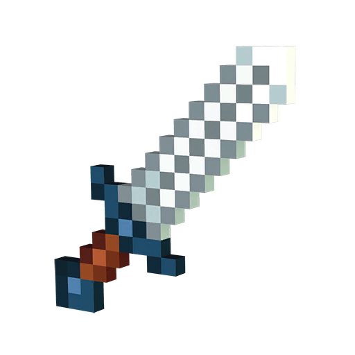
近戰 ×1
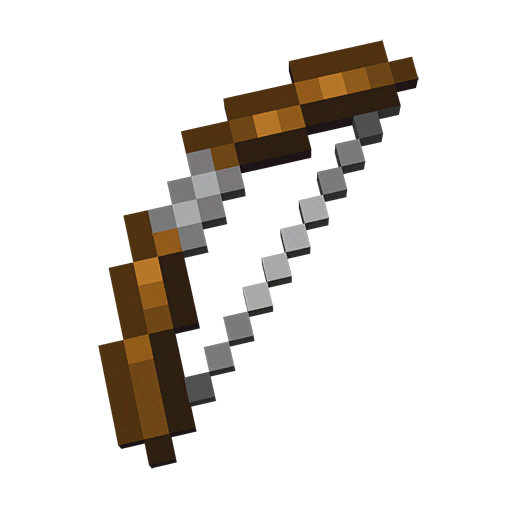
遠程 ×1
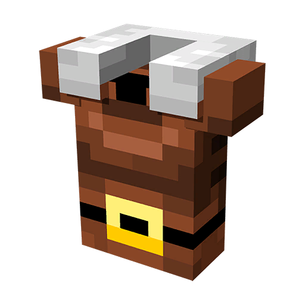
盔甲 ×1
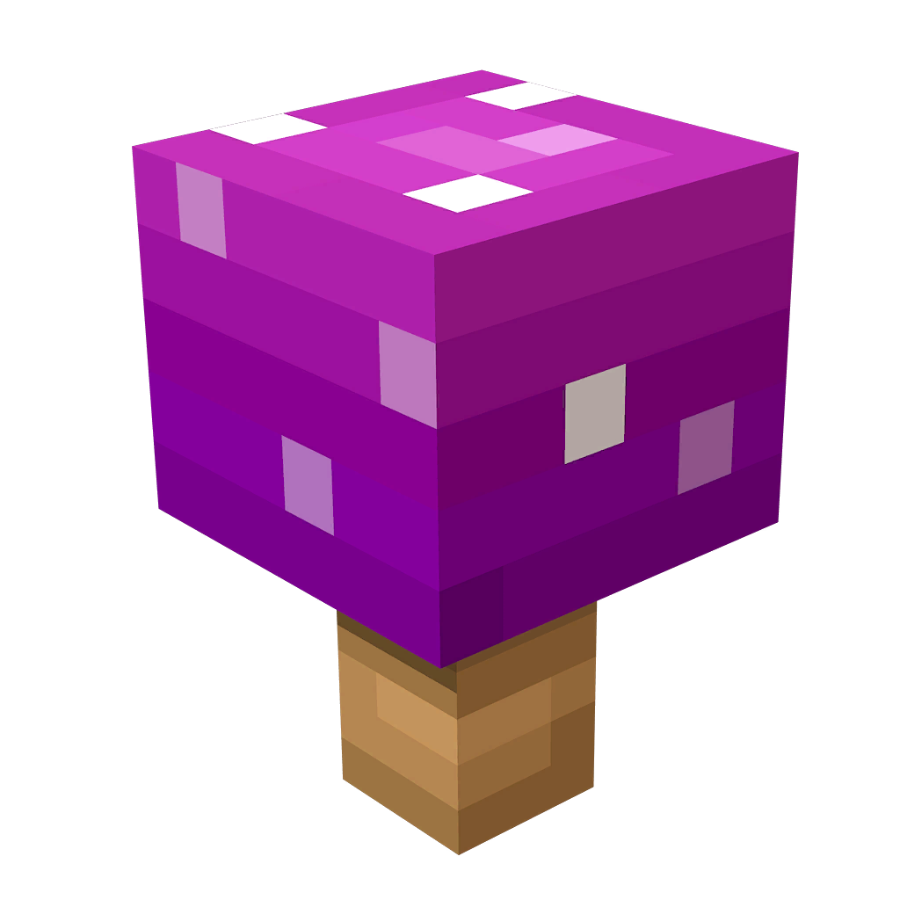
神器 ×3
到底有多少東西？
| 類別 | 筆數 | 其中未實裝 | 季節限定 |
|---|---|---|---|
| 近戰武器 | 83 | 1 | 7 |
| 遠程武器 | 72 | 1 | 7 |
| 盔甲 | 73 | 2 | 7 |
| 神器 | 53 | 8 | 1 |
| 附魔 | 124 | 6 | 1 |
| 消耗品＋其他 | 29＋12 | 9＋8 | 0 |
重點不是背數字，而是知道：東西很多，所以要先學「怎麼讀」。
近戰、遠程、盔甲
近戰：Sword 劍
最基本的武器，沒有固有特性。「A sturdy and reliable blade.」
遠程：Bow 弓
要消耗箭矢。普通遠程武器。
盔甲：Hunter's Armor
每捆箭 +10 支、遠程傷害 +30%。
→ 適合主力用弓的人。
盔甲不只加防禦，它的特性決定你的打法。
固有特性 ≠ 附魔
固有特性 Property
裝備本身就有，換不掉。
例：Hunter's Armor 的 +30% 遠程傷害
附魔 Enchantment
另外加上去的能力，有 I／II／III 階。
例：Sharpness 鋒利
特例：有些武器的特性「就是」一個附魔（內建附魔），遊戲裡用附魔圖示＋橘框表示。
普通、稀有、獨特
| 稀有度 | 特徵 | 例子 |
|---|---|---|
| 普通 Common | 基本款 | Sword |
| 稀有 Rare | 同一件的強化版，名字不變 | Hunter's Armor（Common／Rare） |
| 獨特 Unique | 不同名字，多一條橘色特性 | 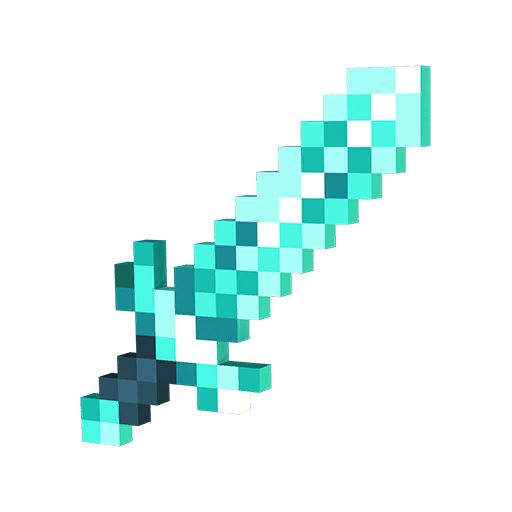 Diamond Sword |
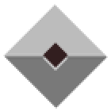
灰點＝普通特性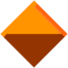
橘點＝只有獨特版才有Sword → Diamond Sword：保留原本的特性，再多一條 Extra damage。
某把武器的特性欄出現一個橘色圓點，代表什麼？
附魔：讓裝備長出新能力
總共 124 個附魔。讀一個附魔只要看三件事：
① 適用範圍
Sharpness 只能給近戰；Critical Hit 近戰、遠程都行。
② 階級 I／II／III
同一個附魔，階級越高越強。
③ 稀有度
普通 vs 強力 Powerful。
階級怎麼變強？看數字
| 附魔 | 適用 | I ／ II ／ III |
|---|---|---|
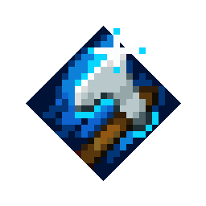 Sharpness 鋒利 | 近戰 | 傷害 +10%／+21%／+33% |
| Critical Hit 暴擊 | 近戰、遠程 | 10%／15%／20% 機率三倍傷害 |
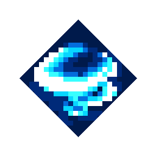 Swirling 旋風 | 近戰 | 連擊最後一擊範圍傷害 X／1.5X／2X |
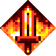 Fire Aspect 火焰附加 | 近戰、遠程 | 使怪物著火 3 秒 |
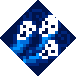 Soul Siphon 靈魂虹吸 | 近戰、遠程 | 20% 機率得 1／3／5 個靈魂 |
紫色＝強力附魔。
神器 vs 消耗品
神器：可以重複用
用完會冷卻。
Death Cap Mushroom：冷卻 30 秒，攻速 +100%、移速 +20%。
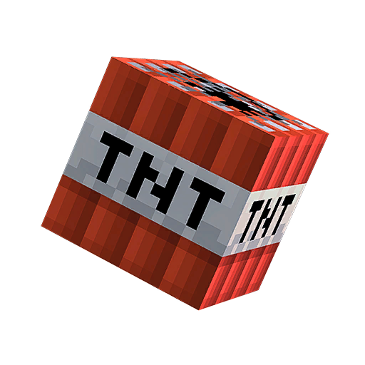
消耗品：用掉就沒了
食物、藥水、彈藥、其他。
TNT：投擲後爆炸，傷害圓形範圍內所有目標。
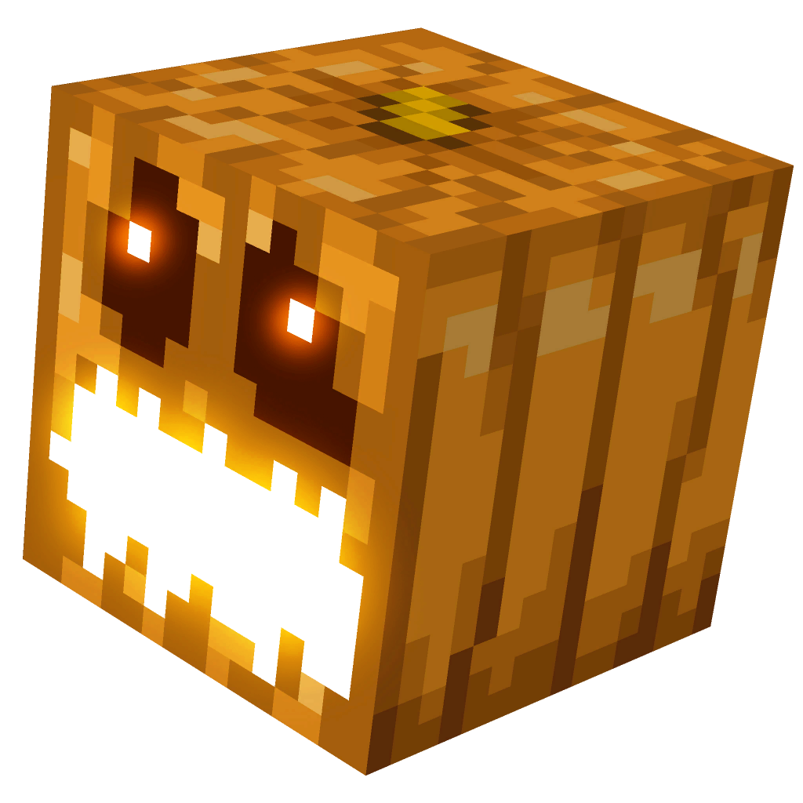
Corrupted Pumpkin 是季節限定，但有實裝。「季節限定」≠「未實裝」。同一個附魔，怪物用起來不一樣
你身上的 Critical Hit
10%／15%／20% 機率造成三倍傷害
怪物身上的 Critical Hit
每一次攻擊都是三倍傷害
看到帶暴擊的怪物，別以為牠「偶爾」才痛，要先拉開距離。
玩家 vs 怪物：五個例子
| 附魔 | 玩家 | 怪物 | 一樣嗎 |
|---|---|---|---|
| Critical Hit | 機率三倍 | 每次三倍 | 不同 |
| Fire Aspect | 使怪物著火 3 秒 | 使英雄燃燒 3 秒 | 對稱 |
| Swirling | 連擊最後一擊觸發 | 英雄靠近時觸發 | 條件不同 |
| Sharpness | +10%／21%／33% | 只在遠古生物身上 | 可信度中 |
| Soul Siphon | 機率得靈魂 | 來源未列出 | 不知道 |
124 個附魔裡：相同 7、不同 12、無法判定 105。大部分的怪物版，Wiki 沒寫清楚。
查不到 ≠ 不存在；來源打架就兩邊都寫
Committed
怪物清單：看英雄生命值
條目頁：看怪物已損失的生命值
Electrified
怪物清單：每 5 秒
條目頁歷史：改成 4 秒
Soul Siphon
沒寫怪物會用 → 只能說「來源未列出」，不能說「怪物不能用」。
❓ 未知你和一隻帶 Critical Hit 的怪物對打。哪個說法正確？
帶走這五句話
- 裝備欄 6 格：近戰、遠程、盔甲各 1，神器 3。
- 固有特性是裝備本身的，附魔是另外加的。
- 橘色特性＝獨特（Unique）裝備。
- 附魔看三件事：適用範圍、I／II／III 階、普通或強力。
- 同名附魔在怪物身上可能完全不同，例如 Critical Hit。
完整名詞表：W7 glossary · 想看全部物品：地城圖鑑
Loop：Wiki → 大綱 → 檢查 → 簡報
橘框＝檢查節點；沒過就退回前一步重做。每頁左下角的「來源」就是第 ⑦ 步要對照的東西。詳見 workflow 說明。